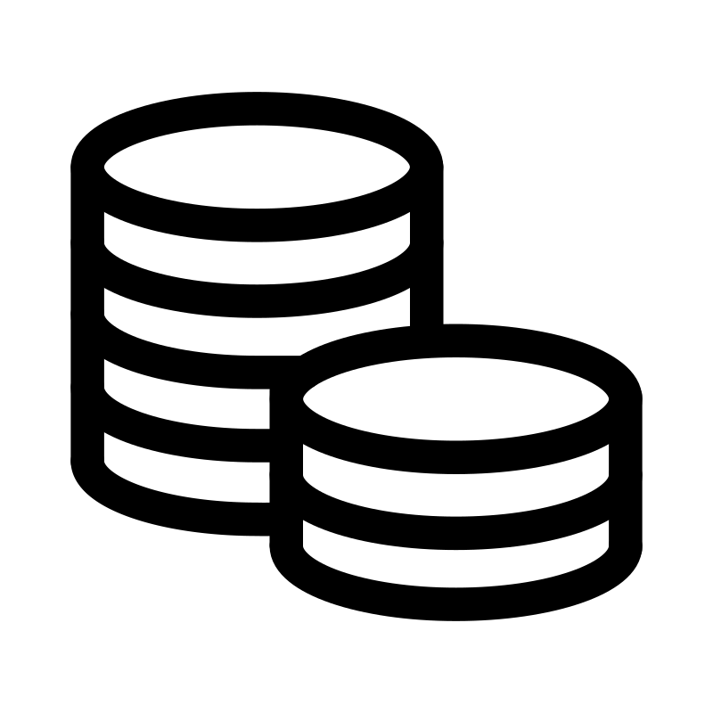
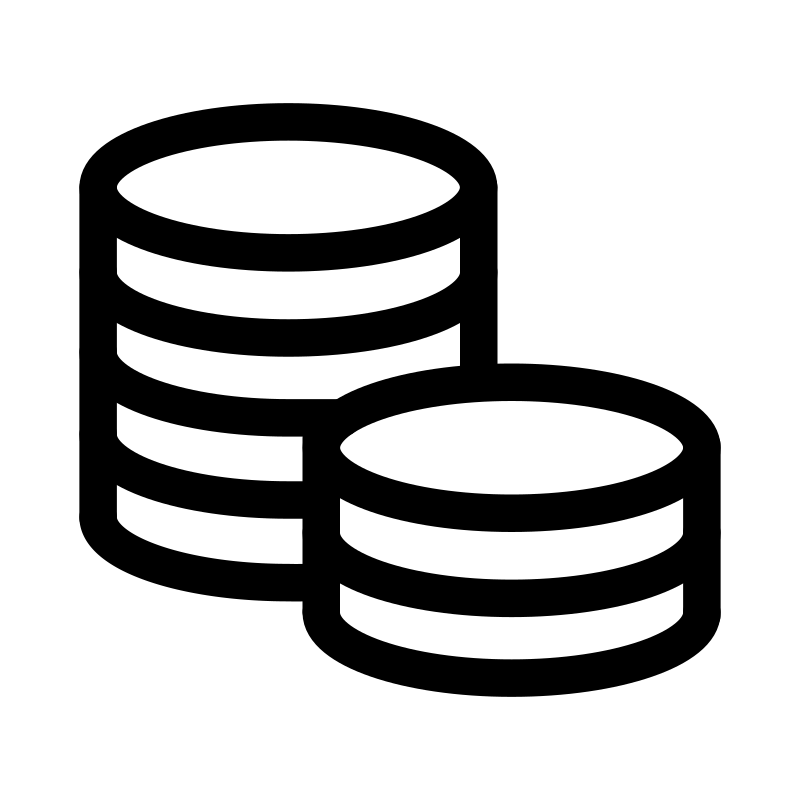

Redes
NEURONALES


 

Las redes neuronales artificiales surgieron en 1958 con el perceptrón de Frank Rosenblatt, un modelo simple que inspiró el desarrollo posterior de arquitecturas más complejas. En 1965 apareció el perceptrón multicapa, incorporando capas ocultas para resolver problemas más difíciles. Durante los años 80 se introdujeron funciones de activación como la sigmoide, las redes feedforward y el algoritmo de backpropagation, que permitió entrenar redes profundas. A finales de esa década surgieron las redes convolucionales (CNN) para procesar imágenes y las redes recurrentes (RNN) para secuencias, con la creación en 1997 de las LSTM para mejorar la memoria en tareas largas. En 2006 el campo renació con las Deep Belief Networks y el concepto de deep learning, impulsado por mayor capacidad de cómputo y grandes volúmenes de datos. Finalmente, en 2014 las GANs revolucionaron el área al generar contenidos realistas, consolidando a las redes neuronales como la base de la inteligencia artificial moderna.
© 2024 Red Neuronales. All rights reserved.